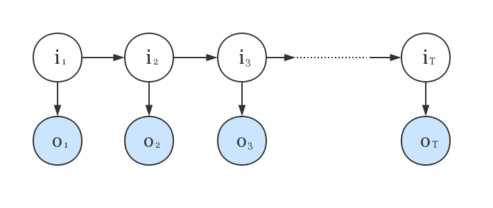
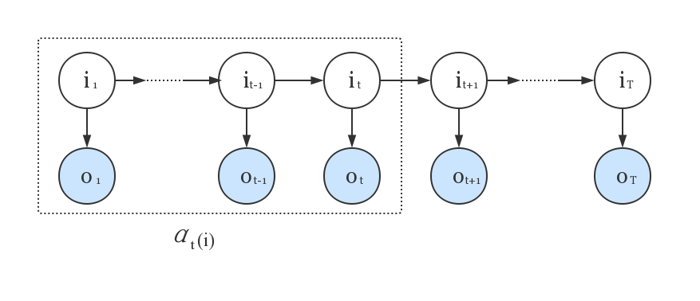
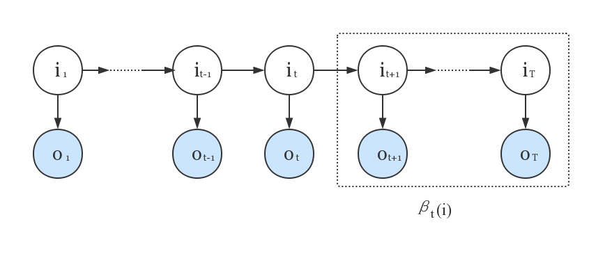

<!DOCTYPE html>
<html lang="zh-CN">
<head><meta name="generator" content="Hexo 3.8.0">
  <!-- hexo-inject:begin --><!-- hexo-inject:end --><meta charset="utf-8">
  
  <title>概率图模型——隐马尔可夫模型 | Sm1les&#39;s blog</title>
  <meta name="viewport" content="width=device-width, initial-scale=1, maximum-scale=1">
  <meta name="description" content="隐马尔可夫模型的定义[1]隐马尔可夫模型（Hidden Markov Model，HMM）是关于时序的概率模型，描述由一个隐藏的马尔可夫链随机生成不可观测的状态随机序列，再由各个状态生成一个观测而产生观测随机序列的过程。隐藏的马尔可夫链随机生成的状态的序列，称为状态序列；每个状态生成一个观测，而由此产生的观测的随机序列，称为观测序列，序列的每一个位置又可以看作是一个时刻。其形式定义如下：   $Q">
<meta name="keywords" content="概率图模型,隐马尔可夫模型,HMM">
<meta property="og:type" content="article">
<meta property="og:title" content="概率图模型——隐马尔可夫模型">
<meta property="og:url" content="http://sm1les.com/2019/04/10/hidden-markov-model/index.html">
<meta property="og:site_name" content="Sm1les&#39;s blog">
<meta property="og:description" content="隐马尔可夫模型的定义[1]隐马尔可夫模型（Hidden Markov Model，HMM）是关于时序的概率模型，描述由一个隐藏的马尔可夫链随机生成不可观测的状态随机序列，再由各个状态生成一个观测而产生观测随机序列的过程。隐藏的马尔可夫链随机生成的状态的序列，称为状态序列；每个状态生成一个观测，而由此产生的观测的随机序列，称为观测序列，序列的每一个位置又可以看作是一个时刻。其形式定义如下：   $Q">
<meta property="og:locale" content="zh-CN">
<meta property="og:image" content="http://sm1les.com/2019/04/10/hidden-markov-model/hmm.png">
<meta property="og:image" content="http://sm1les.com/2019/04/10/hidden-markov-model/hmm-forward.png">
<meta property="og:image" content="http://sm1les.com/2019/04/10/hidden-markov-model/hmm-backward.png">
<meta property="og:updated_time" content="2019-07-24T02:10:07.913Z">
<meta name="twitter:card" content="summary">
<meta name="twitter:title" content="概率图模型——隐马尔可夫模型">
<meta name="twitter:description" content="隐马尔可夫模型的定义[1]隐马尔可夫模型（Hidden Markov Model，HMM）是关于时序的概率模型，描述由一个隐藏的马尔可夫链随机生成不可观测的状态随机序列，再由各个状态生成一个观测而产生观测随机序列的过程。隐藏的马尔可夫链随机生成的状态的序列，称为状态序列；每个状态生成一个观测，而由此产生的观测的随机序列，称为观测序列，序列的每一个位置又可以看作是一个时刻。其形式定义如下：   $Q">
<meta name="twitter:image" content="http://sm1les.com/2019/04/10/hidden-markov-model/hmm.png">
  
  
    <link rel="icon" href="/favicon.ico">
  
  <link rel="stylesheet" href="/css/typing.css">
  <link rel="stylesheet" href="/css/donate.css">
  
  
  <link rel="stylesheet" href="https://cdn.jsdelivr.net/npm/disqusjs@1.1/dist/disqusjs.css"><!-- hexo-inject:begin --><!-- hexo-inject:end -->
  
</head>
</html>
  
    
      <body>
    
  
      <!-- hexo-inject:begin --><!-- hexo-inject:end --><div id="container" class="container">
        <article id="post-hidden-markov-model" class="article article-type-post" itemscope itemprop="blogPost">
  <header id="header" class="header">
  <nav class="mobile-nav">
    <h1 class="nickname">:)s</h1>
    <ul class="mobile-nav-menu">
      <label for="mobile-menu-toggle"><a>&#9776; Menu</a></label>
      <input type="checkbox" id="mobile-menu-toggle">
      <ul class="mobile-nav-link">
        
        <a href="/">Home</a>
        
        <a href="/archives">Archives</a>
        
        <a href="/about">About</a>
        
      </ul>
    </ul>
  </nav>
	
		<nav id="main-nav" class="main-nav nav-left">
	
	
	  <a class="main-nav-link" href="/">Home</a>
	
	  <a class="main-nav-link" href="/archives">Archives</a>
	
	  <a class="main-nav-link" href="/about">About</a>
	
  </nav>
</header>

  <hr>
  <div class="article-inner">
    

    
      <header class="article-header">
        
  
    <h1 class="article-title" itemprop="name">
      概率图模型——隐马尔可夫模型
    </h1>
  

      </header>
    
    <div class="article-entry typo" itemprop="articleBody">
      
        <h3 id="隐马尔可夫模型的定义-1"><a href="#隐马尔可夫模型的定义-1" class="headerlink" title="隐马尔可夫模型的定义[1]"></a>隐马尔可夫模型的定义<sup><a href="#ref1">[1]</a></sup></h3><p>隐马尔可夫模型（Hidden Markov Model，HMM）是关于时序的概率模型，描述由一个隐藏的马尔可夫链随机生成不可观测的状态随机序列，再由各个状态生成一个观测而产生观测随机序列的过程。隐藏的马尔可夫链随机生成的状态的序列，称为<strong>状态序列</strong>；每个状态生成一个观测，而由此产生的观测的随机序列，称为<strong>观测序列</strong>，序列的每一个位置又可以看作是一个时刻。其形式定义如下：</p>
<p><center>

</center><br>$Q$是所有可能的状态的集合，$V$是所有可能的观测的集合：</p>
<script type="math/tex; mode=display">Q=\{q_1,q_2,...,q_N\},V=\{v_1,v_2,...,v_M\}</script><p>其中，$N$是可能的状态数，$M$是可能的观测数。<br>$I$是长度为$T$的状态序列，$O$是对应的观测序列：</p>
<script type="math/tex; mode=display">I=(i_1,i_2,...,i_T),O=(o_1,o_2,...,o_T)</script><p>$A$是<strong>状态转移概率矩阵</strong>：</p>
<script type="math/tex; mode=display">A=[a_{ij}]_{N\times N}</script><p>其中，$a_{ij}=P(i_{t+1}=q_j\vert i_t=q_i),\quad i=1,2,…,N;j=1,2,…,N$，表示在时刻$t$处于状态$q_i$的条件下在时刻$t+1$转移到状态$q_j$的概率。<br>$B$是<strong>观测概率矩阵</strong>：</p>
<script type="math/tex; mode=display">B=[b_{jk}]_{N\times M}</script><p>其中，$b_{jk}=P(o_t=v_k\vert i_t=q_j),\quad j=1,2,…N;k=1,2,…,M$，表示在时刻$t$处于状态$q_j$的条件下生成观测$v_k$的概率。<br>$\pi$是<strong>初始状态概率向量</strong>：</p>
<script type="math/tex; mode=display">\pi=(\pi_1,\pi_2,...,\pi_N)</script><p>其中，$\pi_i=P(i_1=q_i),\quad i=1,2,…,N$，表示时刻$t=1$时处于状态$q_i$的概率。<br>隐马尔可夫模型由初始状态概率向量$\pi$、状态转移概率矩阵$A$和观测概率矩阵$B$决定。$\pi$和$A$决定状态序列，$B$决定观测序列。因此，隐马尔可夫模型$\lambda$可以用三元符号表示，即：</p>
<script type="math/tex; mode=display">\lambda=(A,B,\pi)</script><p>$A,B,\pi$称为隐马尔可夫模型的<strong>三要素</strong>。<br>从定义可知，隐马尔可夫模型作了<strong>两个基本假设</strong>：</p>
<ol>
<li>齐次马尔可夫性假设，即假设隐藏的马尔可夫链在任意时刻$t$的状态只依赖于其前一时刻的状态，与其他时刻的状态及观测无关，也与时刻$t$无关：<script type="math/tex; mode=display">P(i_t\vert i_{t-1},o_{t-1},...,i_1,o_1)=P(i_t\vert i_{t-1})</script></li>
<li>观测独立性假设，即假设任意时刻的观测只依赖于该时刻的马尔可夫链的状态，与其他观测及状态无关：<script type="math/tex; mode=display">P(o_t\vert i_T,o_T,i_{T-1},o_{T-1},...,i_t,i_{t-1},o_{t-1},...,i_1,o_1)=P(o_t\vert i_t)</script></li>
</ol>
<h3 id="隐马尔可夫模型的3个基本问题"><a href="#隐马尔可夫模型的3个基本问题" class="headerlink" title="隐马尔可夫模型的3个基本问题"></a>隐马尔可夫模型的3个基本问题</h3><ol>
<li>概率计算问题：给定模型$\lambda=(A,B,\pi)$和观测序列$O=(o_1,o_2,…,o_T)$，计算在模型$\lambda$下观测序列$O$出现的概率$P(O\vert \lambda)$；</li>
<li>学习问题：已知观测序列$O=(o_1,o_2,…,o_T)$，估计模型$\lambda=(A,B,\pi)$参数，使得在该模型下观测序列概率$P(O\vert \lambda)$最大，即用极大似然估计的方法估计参数；</li>
<li>预测问题：也称为解码问题，已知模型$\lambda=(A,B,\pi)$和观测序列$O=(o_1,o_2,…,o_T)$，求对给定观测序列条件概率$P(I\vert O)$最大的状态序列$I=(i_1,i_2,…,i_T)$，即给定观测序列，求最有可能的对应的状态序列。</li>
</ol>
<h3 id="概率计算问题"><a href="#概率计算问题" class="headerlink" title="概率计算问题"></a>概率计算问题</h3><h5 id="直接计算法"><a href="#直接计算法" class="headerlink" title="直接计算法"></a>直接计算法</h5><p>对于求$P(O\vert \lambda)$最直接的方法就是按照概率公式直接计算，即：</p>
<script type="math/tex; mode=display">\begin{aligned}
P(O\vert\lambda)&=\sum_{I}P(O,I\vert\lambda) \\
&=\sum_{I}P(O\vert I,\lambda)P(I\vert\lambda) 
\end{aligned}</script><p>其中，$P(I\vert \lambda)$表示给定模型参数时，产生状态序列$I=(i_1,i_2,…,i_T)$的概率：</p>
<script type="math/tex; mode=display">P(I\vert \lambda)=\pi_{i_1}a_{i_1i_2}a_{i_2i_3}\cdots a_{i_{T-1}i_T}</script><p>$P(O\vert I,\lambda)$表示给定模型参数且状态序列为$I=(i_1,i_2,…,i_T)$时，产生观测序列$O=(o_1,o_2,…,o_T)$的概率：</p>
<script type="math/tex; mode=display">P(O\vert I,\lambda)=b_{i_1o_1}b_{i_2o_2}...b_{i_To_T}</script><p>所以</p>
<script type="math/tex; mode=display">\begin{aligned}
P(O\vert\lambda)&=\sum_{I}P(O\vert I,\lambda)P(I\vert\lambda) \\
&=\sum_{i_1,i_2,...,i_T}\pi_{i_1}b_{i_1o_1}a_{i_1i_2}b_{i_2o_2}\cdots a_{i_{T-1}i_T}b_{i_To_T}
\end{aligned}</script><p>其中，$\sum_{i_1,i_2,…,i_T}$共有$N^T$种可能，计算$\pi_{i_1}b_{i_1o_1}a_{i_1i_2}b_{i_2o_2}\cdots a_{i_{T-1}i_T}b_{i_To_T}$的时间复杂度为$O(T)$，所以上式整体的时间复杂度为$O(TN^T)$，显然这种算法是不可行的。</p>
<h5 id="前向算法"><a href="#前向算法" class="headerlink" title="前向算法"></a>前向算法</h5><p>首先定义<strong>前向概率</strong>：给定隐马尔可夫模型$\lambda$，定义到时刻$t$部分观测序列为$o_1,o_2,…,o_t$且状态为$q_i$的概率为前向概率，记作：</p>
<script type="math/tex; mode=display">\alpha_t(i)=P(o_1,o_2,...,o_t,i_t=q_i\vert \lambda)</script><p><center>

</center><br>根据前向概率的定义可推得：</p>
<script type="math/tex; mode=display">P(O\vert \lambda)=\sum_{i=1}^{N}P(o_1,o_2,...,o_T,i_T=q_i\vert \lambda)=\sum_{i=1}^{N}\alpha_T(i)</script><p>于是求解$P(O\vert \lambda)$的问题被转化为了求解前向概率$\alpha_T(i)$的问题。由前向概率的定义可知：</p>
<script type="math/tex; mode=display">\begin{aligned}
\alpha_1(i)&=\pi_ib_{io_1}  \\
\alpha_2(i)&=[\sum_{j=1}^{N}\alpha_1(j)a_{ji}]\times b_{io_2} \\
\alpha_3(i)&=[\sum_{j=1}^{N}\alpha_2(j)a_{ji}]\times b_{io_3} \\
\end{aligned}</script><p>依次此类推可得如下递推公式：</p>
<script type="math/tex; mode=display">\alpha_{t+1}(i)=[\sum_{j=1}^{N}\alpha_t(j)a_{ji}]\times b_{io_{t+1}}</script><p>因此可以递推求得：</p>
<script type="math/tex; mode=display">\alpha_{T}(i)=[\sum_{j=1}^{N}\alpha_{T-1}(j)a_{ji}]\times b_{io_{T}}</script><h5 id="后向算法"><a href="#后向算法" class="headerlink" title="后向算法"></a>后向算法</h5><p>同前向算法一样，首先定义<strong>后向概率</strong>：给定隐马尔可夫模型$\lambda$，定义在时刻$t$状态为$q_i$的条件下，从$t+1$到$T$的部分观测序列为$o_{t+1},o_{t+2},…,o_T$的概率为后向概率，记作：</p>
<script type="math/tex; mode=display">\beta_t(i)=P(o_{t+1},o_{t+2},...,o_T\vert i_t=q_i,\lambda)</script><p><center>

</center><br>由后向概率的定义可知：</p>
<script type="math/tex; mode=display">\begin{aligned}
\beta_T(i)&=1  \\
\beta_{T-1}(i)&=\sum_{j=1}^{N}a_{ij}b_{jo_T}\beta_T(j) \\
\beta_{T-2}(i)&=\sum_{j=1}^{N}a_{ij}b_{jo_{T-1}}\beta_{T-1}(j) \\
\end{aligned}</script><p>依次类推可得递推公式：</p>
<script type="math/tex; mode=display">\beta_t(i)=\sum_{j=1}^{N}a_{ij}b_{jo_{t+1}}\beta_{t+1}(j)</script><p>根据递推公式可求得$\beta_1(i)$，又</p>
<script type="math/tex; mode=display">P(O\vert \lambda)=\sum_{i=1}^{N}\pi_ib_{io_1}\beta_1(i)</script><p>所以也可求得$P(O\vert \lambda)$。<br></p>
<p>综上可以看出前向算法和后向算法都是先计算局部概率，然后递推到全局，每一时刻的概率计算都会用上前一时刻计算出的结果，整体的时间复杂度大约为$O(TN^2)$，明显小于直接计算法的$O(TN^T)$。<br></p>
<p><strong>利用前向概率和后向概率，可以得到关于单个状态和两个状态概率的一些计算公式</strong>：</p>
<ol>
<li>给定模型参数$\lambda$和观测$O$，在时刻$t$处于状态$q_i$的概率，记<script type="math/tex; mode=display">\gamma_t(i)=P(i_t=q_i\vert O,\lambda)</script>可以通过前向概率和后向概率进行计算，推导如下：<script type="math/tex; mode=display">\gamma_t(i)=P(i_t=q_i\vert O,\lambda)=\cfrac{P(i_t=q_i,O\vert \lambda)}{P(O\vert\lambda)}</script>又由前向概率和后向概率的定义可知：<script type="math/tex; mode=display">\alpha_t(i)\beta_t(i)=P(i_t=q_i,O\vert\lambda)</script>所以<script type="math/tex; mode=display">\gamma_t(i)=\cfrac{P(i_t=q_i,O\vert \lambda)}{P(O\vert\lambda)}=\cfrac{P(i_t=q_i,O\vert \lambda)}{\sum_{j=1}^NP(i_t=q_j,O\vert \lambda)}=\cfrac{\alpha_t(i)\beta_t(i)}{\sum_{j=1}^N\alpha_t(j)\beta_t(j)} \tag{A.1}</script></li>
<li>给定模型参数$\lambda$和观测$O$，在时刻$t$处于状态$q_i$且在时刻$t+1$处于状态$q_j$的概率，记<script type="math/tex; mode=display">\xi_t(i,j)=P(i_t=q_i,i_{t+1}=q_j\vert O,\lambda)</script>可以通过前向后向概率进行计算，推导如下：<script type="math/tex; mode=display">\xi_t(i,j)=\cfrac{P(i_t=q_i,i_{t+1}=q_j,O\vert\lambda)}{P(O\vert\lambda)}=\cfrac{P(i_t=q_i,i_{t+1}=q_j,O\vert\lambda)}{\sum_{i=1}^N\sum_{j=1}^NP(i_t=q_i,i_{t+1}=q_j,O\vert\lambda)}</script>而<script type="math/tex; mode=display">P(i_t=q_i,i_{t+1}=q_j,O\vert\lambda)=\alpha_t(i)a_{ij}b_{jo_{t+1}}\beta_{t+1}(j)</script>所以<script type="math/tex; mode=display">\xi_t(i,j)=\cfrac{\alpha_t(i)a_{ij}b_{jo_{t+1}}\beta_{t+1}(j)}{\sum_{i=1}^N\sum_{j=1}^N\alpha_t(i)a_{ij}b_{jo_{t+1}}\beta_{t+1}(j)}\tag{A.2}</script></li>
</ol>
<h3 id="学习问题"><a href="#学习问题" class="headerlink" title="学习问题"></a>学习问题</h3><h5 id="监督学习方法"><a href="#监督学习方法" class="headerlink" title="监督学习方法"></a>监督学习方法</h5><p>假设已给出训练数据包含$S$个长度相同的观测序列和对应的状态序列$\{(O_1,I_1),(O_2,I_2),…,(O_S,I_S)\}$，那么可以利用极大似然估计法来估计隐马尔可夫模型的参数，具体方法如下：</p>
<ul>
<li>转移概率$a_{ij}$的估计：<script type="math/tex; mode=display">a_{ij}=\cfrac{A_{ij}}{\sum_{j=1}^NA_{ij}}</script>其中，$A_{ij}$为样本中时刻$t$处于状态$q_i$而到时刻$t+1$转移到状态$q_j$的频数；</li>
<li>观测概率$b_{jk}$的估计：<script type="math/tex; mode=display">b_{jk}=\cfrac{B_{jk}}{\sum_{k=1}^MB_{jk}}</script>其中，$B_{jk}$为样本中状态为$q_j$，其对应观测为$v_k$的频数；</li>
<li>初始状态概率$\pi_i$的估计为$S$个样本中初始状态为$q_i$的<strong>频率</strong>。</li>
</ul>
<p>显然此训练数据中的状态序列数据通常是需要人工标注出来的，因此代价较高，所以非监督学习的方法更为实用，例如Baum-Welch算法。</p>
<h5 id="Baum-Welch算法"><a href="#Baum-Welch算法" class="headerlink" title="Baum-Welch算法"></a>Baum-Welch算法</h5><p>如果只有观测序列数据$O=(o_1,o_2,…,o_T)$，而没有状态序列数据$I=(i_1,i_2,…,i_T)$，那么隐马尔可夫模型就是一个含有隐变量的概率模型：</p>
<script type="math/tex; mode=display">P(O|\lambda)=\sum_I P(O\vert I,\lambda)P(I\vert \lambda)</script><p>如果要对它进行参数估计，则可以采用<strong>EM算法</strong>来实现，具体步骤如下：</p>
<h6 id="1-确定完全数据的对数似然函数"><a href="#1-确定完全数据的对数似然函数" class="headerlink" title="1.确定完全数据的对数似然函数"></a>1.确定完全数据的对数似然函数</h6><p>此时观测数据为$O=(o_1,o_2,…,o_T)$，未观测数据为$I=(i_1,i_2,…,i_T)$，则完全数据为$(O,I)=(o_1,o_2,…,o_T,i_1,i_2,…,i_T)$，完全数据的对数似然函数为：</p>
<script type="math/tex; mode=display">\ln P(O,I\vert \lambda)</script><p>其中，$P(O,I\vert \lambda)=\pi_{i_1}b_{i_1o_1}a_{i_1i_2}b_{i_2o_2}\cdots a_{i_{T-1}i_T}b_{i_To_T}$，所以可以进一步推得：</p>
<script type="math/tex; mode=display">\begin{aligned}
\ln P(O,I\vert \lambda)&=\ln (\pi_{i_1}b_{i_1o_1}a_{i_1i_2}b_{i_2o_2}\cdots a_{i_{T-1}i_T}b_{i_To_T}) \\
&=\ln \pi_{i_1} + \sum_{t=1}^{T-1}\ln a_{i_t i_{t+1}} + \sum_{t=1}^{T}\ln b_{i_t o_t} \\
\end{aligned}</script><h6 id="2-EM算法E步：求-Q-函数-Q-lambda-bar-lambda"><a href="#2-EM算法E步：求-Q-函数-Q-lambda-bar-lambda" class="headerlink" title="2.EM算法E步：求$Q$函数$Q(\lambda,\bar{\lambda})$"></a>2.EM算法E步：求$Q$函数$Q(\lambda,\bar{\lambda})$</h6><script type="math/tex; mode=display">Q(\lambda,\bar{\lambda})=\sum_I P(I\vert O,\bar{\lambda})\ln P(O,I\vert \lambda)</script><p>其中，$\bar{\lambda}$是隐马尔可夫模型参数的当前估计值，$\lambda$是要极大化的隐马尔可夫模型参数。为了便于后续计算，$Q$函数还可以作如下恒等变形：</p>
<script type="math/tex; mode=display">\begin{aligned}
Q(\lambda,\bar{\lambda})&=\sum_I P(I\vert O,\bar{\lambda})\ln P(O,I\vert \lambda) \\
&=\sum_I \cfrac{P(I\vert O,\bar{\lambda})P(O\vert\bar{\lambda})}{P(O\vert\bar{\lambda})}\ln P(O,I\vert \lambda) \\
&=\sum_I \cfrac{P(O,I\vert\bar{\lambda})}{P(O\vert\bar{\lambda})}\ln P(O,I\vert \lambda)
\end{aligned}</script><p>由于接下来仅极大化$\lambda$，所以$P(O\vert\bar{\lambda})$可以看做常数项进行略去，所以$Q$函数可以进一步化简为：</p>
<script type="math/tex; mode=display">\begin{aligned}
Q(\lambda,\bar{\lambda})&=\sum_I P(O,I\vert\bar{\lambda})\ln P(O,I\vert \lambda) \\
&=\sum_I P(O,I\vert\bar{\lambda})\left(\ln \pi_{i_1} + \sum_{t=1}^{T-1}\ln a_{i_t i_{t+1}} + \sum_{t=1}^{T}\ln b_{i_t o_t}\right) \\
&=\sum_I P(O,I\vert\bar{\lambda})\ln \pi_{i_1} + \sum_I P(O,I\vert\bar{\lambda})\left(\sum_{t=1}^{T-1}\ln a_{i_t i_{t+1}}\right)+ \sum_I P(O,I\vert\bar{\lambda})\left(\sum_{t=1}^{T}\ln b_{i_t o_t}\right)
\end{aligned}</script><h6 id="3-EM算法M步：极大化-Q-函数"><a href="#3-EM算法M步：极大化-Q-函数" class="headerlink" title="3.EM算法M步：极大化$Q$函数"></a>3.EM算法M步：极大化$Q$函数</h6><p>由于要极大化的参数在上式中单独地出现在3个项中，所以只需对各项分别极大化。</p>
<ol>
<li>上述$Q$函数中的第1项可以写成：<script type="math/tex; mode=display">\begin{aligned}
\sum_I P(O,I\vert\bar{\lambda})\ln \pi_{i_1} &=\sum_{i=1}^N \left\{\ln\pi_{i}\cdot\left(\sum_{i_2,i_3,...,i_T} P(O,i_1=q_i,i_2,i_3,...,i_T\vert\bar{\lambda})\right)\right\} \\
&=\sum_{i=1}^N \left\{\ln\pi_{i}\cdot P(O,i_1=q_i\vert\bar{\lambda})\right\} \\
&=\sum_{i=1}^N\ln\pi_{i}P(O,i_1=q_i\vert\bar{\lambda})
\end{aligned}</script>由于$\pi_i$需要满足约束$\sum_{i=1}^N\pi_i=1$，利用拉格朗日乘子法，写出拉格朗日函数：<script type="math/tex; mode=display">\sum_{i=1}^N\ln\pi_{i}P(O,i_1=q_i\vert\bar{\lambda})+\eta\left(\sum_{i=1}^N\pi_i-1\right)</script>对其关于$\pi_i$求偏导并令结果为0：<script type="math/tex; mode=display">\cfrac{\partial}{\partial\pi_i}\left[\sum_{i=1}^N\ln\pi_{i}P(O,i_1=q_i\vert\bar{\lambda})+\eta\left(\sum_{i=1}^N\pi_i-1\right)\right]=0</script>得<script type="math/tex; mode=display">P(O,i_1=q_i\vert\bar{\lambda})+\eta\pi_i=0\tag{B.1}</script>对上式关于$i$求和可得：<script type="math/tex; mode=display">\begin{aligned}
\sum_{i=1}^N\left[P(O,i_1=q_i\vert\bar{\lambda})+\eta\pi_i\right]&=0 \\
\sum_{i=1}^NP(O,i_1=q_i\vert\bar{\lambda})+\sum_{i=1}^N\eta\pi_i&=0 \\
P(O\vert\bar{\lambda})+\eta\cdot 1&=0 \\
\end{aligned}</script>解得<script type="math/tex; mode=display">\eta=-P(O\vert\bar{\lambda})</script>将其代回式（B.1）可得：<script type="math/tex; mode=display">P(O,i_1=q_i\vert\bar{\lambda})-P(O\vert\bar{\lambda})\cdot\pi_i=0</script><script type="math/tex; mode=display">\pi_i = \cfrac{P(O,i_1=q_i\vert\bar{\lambda})}{P(O\vert\bar{\lambda})}</script><script type="math/tex; mode=display">\pi_i=\gamma_1(i)</script>其中，$\gamma_1(i)$由式（A.1）给出。</li>
<li>上述$Q$函数中的第2项可以写成：<script type="math/tex; mode=display">\begin{aligned} 
\sum_I P(O,I\vert\bar{\lambda})\left(\sum_{t=1}^{T-1}\ln a_{i_t i_{t+1}}\right)&=\sum_{t=1}^{T-1}\left\{\sum_{i=1}^N\sum_{j=1}^N\left[\ln a_{ij}\cdot\left(\sum_{i_1,...,i_{t-1},i_{t+2},...,i_T}P(O,i_1,...,i_t=q_i,i_{t+1}=q_j,...,i_T\vert\bar{\lambda})\right)\right]\right\} \\
&=\sum_{t=1}^{T-1}\left\{\sum_{i=1}^N\sum_{j=1}^N\left[\ln a_{ij}\cdot P(O,i_t=q_i,i_{t+1}=q_j\vert\bar{\lambda})\right]\right\} \\
&=\sum_{t=1}^{T-1}\sum_{i=1}^N\sum_{j=1}^N\ln a_{ij}P(O,i_t=q_i,i_{t+1}=q_j\vert\bar{\lambda})
\end{aligned}</script>由于$a_{ij}$满足约束$\sum_{j=1}^Na_{ij}=1$，同样利用拉格朗日乘子法，写出拉格朗日函数：<script type="math/tex; mode=display">\sum_{t=1}^{T-1}\sum_{i=1}^N\sum_{j=1}^N\ln a_{ij}P(O,i_t=q_i,i_{t+1}=q_j\vert\bar{\lambda})+\eta\left(\sum_{j=1}^Na_{ij}-1\right)</script>对其关于$a_{ij}$求偏导并令结果为0：<script type="math/tex; mode=display">\cfrac{\partial}{\partial a_{ij}}\left[\sum_{t=1}^{T-1}\sum_{i=1}^N\sum_{j=1}^N\ln a_{ij}P(O,i_t=q_i,i_{t+1}=q_j\vert\bar{\lambda})+\eta\left(\sum_{j=1}^Na_{ij}-1\right)\right]=0</script>得<script type="math/tex; mode=display">\sum_{t=1}^{T-1}P(O,i_t=q_i,i_{t+1}=q_j\vert\bar{\lambda})+\eta a_{ij}=0\tag{B.2}</script>对上式关于$j$求和可得：<script type="math/tex; mode=display">\begin{aligned} 
\sum_{j=1}^N\sum_{t=1}^{T-1}P(O,i_t=q_i,i_{t+1}=q_j\vert\bar{\lambda})+\sum_{j=1}^N\eta a_{ij}&=0 \\
\sum_{t=1}^{T-1}P(O,i_t=q_i\vert\bar{\lambda})+\eta\cdot 1&=0 \\
\end{aligned}</script>解得：<script type="math/tex; mode=display">\eta=-\sum_{t=1}^{T-1}P(O,i_t=q_i\vert\bar{\lambda})</script>将其代回式（B.2）可得：<script type="math/tex; mode=display">\sum_{t=1}^{T-1}P(O,i_t=q_i,i_{t+1}=q_j\vert\bar{\lambda})-\sum_{t=1}^{T-1}P(O,i_t=q_i\vert\bar{\lambda}) \cdot a_{ij}=0</script><script type="math/tex; mode=display">a_{ij}=\cfrac{\sum_{t=1}^{T-1}P(O,i_t=q_i,i_{t+1}=q_j\vert\bar{\lambda})}{\sum_{t=1}^{T-1}P(O,i_t=q_i\vert\bar{\lambda})}</script>分子分母同时除以$P(O|\bar{\lambda})$，所以<script type="math/tex; mode=display">a_{ij}=\cfrac{\cfrac{\sum_{t=1}^{T-1}P(O,i_t=q_i,i_{t+1}=q_j\vert\bar{\lambda})}{P(O|\bar{\lambda})}}{\cfrac{\sum_{t=1}^{T-1}P(O,i_t=q_i\vert\bar{\lambda})}{P(O|\bar{\lambda})}}=\cfrac{\sum_{t=1}^{T-1}P(i_t=q_i,i_{t+1}=q_j\vert O,\bar{\lambda})}{\sum_{t=1}^{T-1}P(i_t=q_i\vert O,\bar{\lambda})}=\cfrac{\sum_{t=1}^{T-1}\xi_t(i,j)}{\sum_{t=1}^{T-1}\gamma_t(i)}</script>其中，$\xi_t(i,j)$由式（A.2）给出，$\gamma_t(i)$由式（A.1）给出。</li>
<li>上述$Q$函数中的第3项可以写成：<script type="math/tex; mode=display">\begin{aligned}
\sum_I P(O,I\vert\bar{\lambda})\left(\sum_{t=1}^{T}\ln b_{i_t o_t}\right)&=\sum_{t=1}^{T}\left\{\sum_{j=1}^N\left[\ln b_{jo_t}\cdot\left(\sum_{i_1,...,i_{t-1},i_{t+1},...,i_T}P(O,i_1,...,i_t=q_j,...,i_T\vert\bar{\lambda})\right)\right]\right\} \\
&=\sum_{t=1}^{T}\left\{\sum_{j=1}^N\left[\ln b_{jo_t}\cdot P(O,i_t=q_j\vert\bar{\lambda})\right]\right\} \\
&=\sum_{t=1}^{T}\sum_{j=1}^N\ln b_{jo_t}P(O,i_t=q_j\vert\bar{\lambda}) \\
\end{aligned}</script>由于$b_{jk}$满足约束$\sum_{k=1}^M b_{jk}=1$，同样利用拉格朗日乘子法，写出拉格朗日函数：<script type="math/tex; mode=display">\sum_{t=1}^{T}\sum_{j=1}^N\ln b_{jo_t}P(O,i_t=q_j\vert\bar{\lambda})+\eta\left(\sum_{k=1}^M b_{jk}-1\right)</script>对其关于$b_{jk}$求偏导并令结果为0：<script type="math/tex; mode=display">\cfrac{\partial}{\partial b_{jk}}\left[\sum_{t=1}^{T}\sum_{j=1}^N\ln b_{jo_t}P(O,i_t=q_j\vert\bar{\lambda})+\eta\left(\sum_{k=1}^M b_{jk}-1\right)\right]=0</script>得<script type="math/tex; mode=display">\sum_{t=1}^{T}P(O,i_t=q_j\vert\bar{\lambda})\mathbb{I}(o_t=v_k)+\eta b_{jk}=0 \tag{B.3}</script>其中，$\mathbb{I}(o_t=v_k)$为指示函数。对上式关于$k$求和可得：<script type="math/tex; mode=display">\begin{aligned}
\sum_{k=1}^M\sum_{t=1}^{T}P(O,i_t=q_j\vert\bar{\lambda})\mathbb{I}(o_t=v_k)+\sum_{k=1}^M\eta b_{jk}&=0 \\
\sum_{t=1}^{T}P(O,i_t=q_j\vert\bar{\lambda})+\eta\cdot 1&=0 
\end{aligned}</script>解得：<script type="math/tex; mode=display">\eta=-\sum_{t=1}^{T}P(O,i_t=q_j\vert\bar{\lambda})</script>将其代回式（B.3）可得：<script type="math/tex; mode=display">\sum_{t=1}^{T}P(O,i_t=q_j\vert\bar{\lambda})\mathbb{I}(o_t=v_k)-\sum_{t=1}^{T}P(O,i_t=q_j\vert\bar{\lambda})\cdot b_{jk}=0</script><script type="math/tex; mode=display">b_{jk}=\cfrac{\sum_{t=1}^{T}P(O,i_t=q_j\vert\bar{\lambda})\mathbb{I}(o_t=v_k)}{\sum_{t=1}^{T}P(O,i_t=q_j\vert\bar{\lambda})}</script>分子分母同时除以$P(O|\bar{\lambda})$，所以<script type="math/tex; mode=display">b_{jk}=\cfrac{\cfrac{\sum_{t=1}^{T}P(O,i_t=q_j\vert\bar{\lambda})\mathbb{I}(o_t=v_k)}{P(O|\bar{\lambda})}}{\cfrac{\sum_{t=1}^{T}P(O,i_t=q_j\vert\bar{\lambda})}{P(O|\bar{\lambda})}}=\cfrac{\sum_{t=1}^{T}P(i_t=q_j\vert O,\bar{\lambda})\mathbb{I}(o_t=v_k)}{\sum_{t=1}^{T}P(i_t=q_j\vert O,\bar{\lambda})}=\cfrac{\sum_{t=1,o_t=v_k}^T\gamma_t(j)}{\sum_{t=1}^{T}\gamma_t(j)}</script>其中，$\gamma_t(j)$由式（A.1）给出。</li>
</ol>
<h3 id="预测问题"><a href="#预测问题" class="headerlink" title="预测问题"></a>预测问题</h3><h5 id="近似算法"><a href="#近似算法" class="headerlink" title="近似算法"></a>近似算法</h5><p>近似算法思想：在每个时刻$t$选择在该时刻最有可能出现的状态$i_t^*$，从而得到一个状态序列$I^*=(i_1^*,i_2^*,…,i_T^*)$，将它作为预测的结果。具体算法如下：<br><br>给定隐马尔可夫模型$\lambda$和观测序列$O$，在时刻$t$处于状态$q_i$的概率$\gamma_t(i)$是</p>
<script type="math/tex; mode=display">\gamma_t(i)=\cfrac{\alpha_t(i)\beta_t(i)}{\sum_{j=1}^N\alpha_t(j)\beta_t(j)}</script><p>在每一时刻$t$最有可能的状态$i_t^*$是</p>
<script type="math/tex; mode=display">i_t^*=\arg\max\limits_{1\leq i \leq N}[\gamma_t(i)],\quad t=1,2,...,T</script><p>从而得到状态序列$I^*=(i_1^*,i_2^*,…,i_T^*)$。<br><br>近似算法的优点是计算简单，其缺点是不能保证预测的状态序列整体是最有可能的状态序列，因为预测的序列可能有实际不发生的部分，也即可能存在状态转移概率$a_{i^*j^*}=0$的相邻状态$i^*$和$j^*$出现。<strong>尽管如此，近似算法仍然是有用的。</strong></p>
<h5 id="维特比算法"><a href="#维特比算法" class="headerlink" title="维特比算法"></a>维特比算法</h5><p>维特比算法实际是用<strong>动态规划</strong>解隐马尔可夫模型预测问题，即用动态规划求概率最大路径，这时一条路径对应着一个状态序列。具体算法如下：<br><br>定义在时刻$t$状态为$q_i$的所有单个路径$(i_1,i_2,…,i_t)$中概率最大值为</p>
<script type="math/tex; mode=display">\delta_t(i)=\max\limits_{i_1,i_2,..,i_{t-1}}P(o_1,...,o_t,i_1,...,i_{t-1},i_t=q_i),\quad i=1,2,...,N</script><p>由上述定义可知：</p>
<script type="math/tex; mode=display">\begin{aligned}
\delta_1(i)&=\pi_ib_{io_1} \\
\delta_2(i)&=\max\limits_{1\leq j\leq N}[\delta_1(j)a_{ji}]b_{io_2} \\
\delta_3(i)&=\max\limits_{1\leq j\leq N}[\delta_2(j)a_{ji}]b_{io_3} \\
\end{aligned}</script><p>依次此类推可得如下递推公式：</p>
<script type="math/tex; mode=display">\delta_{t}(i)=\max\limits_{1\leq j\leq N}[\delta_{t-1}(j)a_{ji}]b_{io_t}</script><p>同时再定义在时刻$t$状态为$q_i$的所有单个路径$(i_1,i_2,…,i_{t-1},i_t)$中概率最大的路径的第$t-1$个结点为</p>
<script type="math/tex; mode=display">\psi_t(i)=\arg\max\limits_{1\leq j\leq N}[\delta_{t-1}(j)a_{ji}]</script><p>因此，取$i_T^*=\arg\max\limits_{i}[\delta_T(i)]$，则$i_{T-1}^*=\psi_T(i_T^*),i_{T-2}^*=\psi_{T-1}(i_{T-1}^*),…,i_1^*=\psi_2(i_2^*)$，具体例子参见<a href="#ref1">[1]</a>第10章例10.3。</p>
<h3 id="参考文献"><a href="#参考文献" class="headerlink" title="参考文献"></a>参考文献</h3><p><span id="ref1">[1] 李航.《统计学习方法》</span></p>

      
      
    </div>
    <footer class="article-footer">
      <ul class="article-meta">
        <li>
          <span class="label">本文作者：Sm1les</span>
        </li>
        <li>
          <span class="label">本文链接：<a href="http://sm1les.com/2019/04/10/hidden-markov-model/">http://sm1les.com/2019/04/10/hidden-markov-model/</a></span>
        </li>
        <li>
          <span class="label">版权声明：本作品采用<a rel="license" href="http://creativecommons.org/licenses/by-nc-nd/3.0/">CC BY-NC-ND 3.0 许可协议</a>进行许可，转载请注明出处！</span>
        </li>
        <li>
          <span class="label">发布日期:</span>
          <a href="/2019/04/10/hidden-markov-model/" class="article-date">
  <time datetime="2019-04-10T12:03:50.000Z" itemprop="datePublished">2019-04-10</time>
</a>

        </li>
        <li>
          <span class="label">更新日期:</span>
          <a href="/2019/04/10/hidden-markov-model/" class="article-date">
  <time datetime="2019-07-24T02:10:07.913Z" itemprop="dateUpdated">2019-07-24</time>
</a>

        </li>
        
          <li>
            <span class="label">分类:</span>
            
  <div class="article-category">
    <a class="article-category-link" href="/categories/机器学习/">机器学习</a>
  </div>


          </li>
        
        
          <li>
            <span class="label">标签:</span>
            
  <ul class="article-tag-list"><li class="article-tag-list-item"><a class="article-tag-list-link" href="/tags/HMM/">HMM</a></li><li class="article-tag-list-item"><a class="article-tag-list-link" href="/tags/概率图模型/">概率图模型</a></li><li class="article-tag-list-item"><a class="article-tag-list-link" href="/tags/隐马尔可夫模型/">隐马尔可夫模型</a></li></ul>


          </li>
        
        <hr>
      </ul>
    </footer>
  </div>
  
    
<nav id="article-nav" class="article-nav">
  
    <span id="article-nav-newer" class="article-nav-link-wrap newer"></span>
  
  
    <a href="/2019/03/13/expectation-maximization/" id="article-nav-older" class="article-nav-link-wrap older">
      <strong class="article-nav-caption">Older</strong>
      <div class="article-nav-title">EM算法的两种推导方式</div>
    </a>
  
</nav>


  
</article>


  <section id="comments" class="comments">
    <div id="disqus_thread"></div>
  </section>


      </div>
      
    <footer id="footer" class="post-footer footer">
      
      <hr>
      <div id="footerContent" class="footer-content">
        <p>© 2019 <strong>Sm1les</strong> Powered by <strong>Hexo</strong> Theme © <strong>GeekPlux</strong></p>


      </div>
    </footer>

      


<script src="https://cdn.jsdelivr.net/npm/disqusjs@1.1/dist/disqus.js"></script>
<script>
  var dsqjs = new DisqusJS({
      shortname: 'sm1les',
      siteName: 'sm1les',
      api: 'https://disqus.skk.moe/disqus/',
      apikey: 'NpJpGPceHYYAG6eEwrFFG6HE7SvnS5xaupPIG6CSTE67oyuOmQPTiFHMLtj3KkxO',
      admin: 'sm1lex,',
      adminLabel: 'Loading...'
  });
  </script>


<script src="https://cdn.jsdelivr.net/npm/jquery@3/dist/jquery.min.js"></script>
<script src="https://cdn.jsdelivr.net/npm/clipboard@2/dist/clipboard.min.js"></script>


  <link rel="stylesheet" href="https://cdn.jsdelivr.net/npm/@fancyapps/fancybox@3/dist/jquery.fancybox.min.css">
  <script src="https://cdn.jsdelivr.net/npm/@fancyapps/fancybox@3/dist/jquery.fancybox.min.js"></script>


<script src="/js/typing.js"></script>
<!--[if lt IE 9]><script src="https://cdn.jsdelivr.net/npm/html5shiv@3/dist/html5shiv.min.js"></script><![endif]-->


  <!-- Global site tag (gtag.js) - Google Analytics -->
  <script async src="https://www.googletagmanager.com/gtag/js?id=UA-131477813-1"></script>
  <script>
    window.dataLayer = window.dataLayer || [];
    function gtag(){dataLayer.push(arguments);}
    gtag('js', new Date());
    gtag('config', 'UA-131477813-1');
  </script>
  <!-- End Google Analytics -->
  


    </div>
  <script type="text/x-mathjax-config">
    MathJax.Hub.Config({
        tex2jax: {
            inlineMath: [ ["$","$"], ["\\(","\\)"] ],
            skipTags: ['script', 'noscript', 'style', 'textarea', 'pre', 'code'],
            processEscapes: true
        }
    });
    MathJax.Hub.Queue(function() {
        var all = MathJax.Hub.getAllJax();
        for (var i = 0; i < all.length; ++i)
            all[i].SourceElement().parentNode.className += ' has-jax';
    });
</script>
<script src='https://cdnjs.cloudflare.com/ajax/libs/mathjax/2.7.5/MathJax.js?config=TeX-MML-AM_CHTML' async></script><!-- hexo-inject:begin --><!-- hexo-inject:end -->
</body>
</html>
